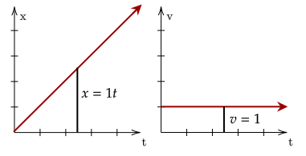
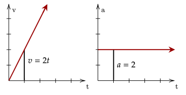
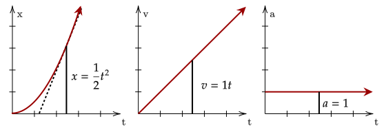

In the previous tutorial, we saw that the slope of position is velocity, and the slope of velocity is acceleration. This "rate of change" corresponds to taking the

In the above figure, it is seen that the position is given by a line. Taking the derivative of a line gives a constant, which aligns with what we know; a constant velocity gives a linear position.
This fact can be easily shown by this relation that we saw some time back; the derivative of postion with respect to time is velocity. We differentiate with respect to time as we want to find out how it changes with time.
To get the velocity function given the position function, we just take the derivative of it with respect to time.
How about velocity and acceleration? Recalling our motion graphs, we also saw that a constant acceleration gives a linear velocity. We also noted that the slope of velocity is the acceleration.

With this, we can show that the derivative of velocity with respect to time gives us the acceleration.
Now, we can relate acceleration and position. Since we know now that acceleration is the derivative of velocity, and velocity is the derivative of position, if we take the second derivative of position we can get the value of acceleration.

We can see that the graph of position under constant acceleration is a quadratic equation. Taking the derivative once of this equation gives us the velocity, which in the graph is .
Then, taking the derivative again gives us the acceleration. This aligns with what we saw.
We first get the velocity function by differenatiating the position function with respect to time.
This gives us the velocity at the given times is −16m/s and −40m/s respectively. Then, we differentiate this again to get our acceleration.
This shows that the acceleration is constant; it is −8.0m/s² for both given times.
How about going backwards? We saw that the sum of the area under the graph of velocity is the total displacement; this corresponds nicely to the
This fact can be written as the following.
Since integration is the inverse operation of differentiation, if we take the derivative of a function and then integrate it, we should get the original function. This fact is preserved, as shown below.
We can also say this for acceleration and velocity, written below.
To get the velocity and position functions, we must integrate the acceleration function with respect to time.
The only problem we have now is the arbitrary constant . To get this, note the mention that the initial velocity was zero. Setting the value of the velocity function to zero shows that the arbitrary constant has to be zero for this to be true.
We then integrate this again to get our position function.
Setting the arbitrary constant at zero based on the logic above, we have our final position function below.
We saw above how to use integrals to integrate with respect to changing acceleration. However, most of the time acceleration is constant. Let's try integrating a constant acceleration, as shown below.
Since we know the arbitrary constant becomes the initial velocity, we set that as . We can integrate this again to get our position function.
Now, we have two functions that can give us the position and velocity of a particle given constant acceleration. These two equations are part of a series of four equations called the kinematic equations, which we will derive with algebra in the next tutorial.